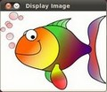

Here you can read tutorials about how to set up your computer to work with the OpenCV library. Additionally you can find very basic sample source code to introduce you to the world of the OpenCV.
Linux
Title: Installation in Linux Compatibility: > OpenCV 2.0 Author: Ana Huamán We will learn how to setup OpenCV in your computer! |
Title: Using OpenCV with gcc and CMake Compatibility: > OpenCV 2.0 Author: Ana Huamán We will learn how to compile your first project using gcc and CMake |
Title: Using OpenCV with Eclipse (plugin CDT) Compatibility: > OpenCV 2.0 Author: Ana Huamán We will learn how to compile your first project using the Eclipse environment |
Windows
Title: Installation in Windows Compatibility: > OpenCV 2.0 Author: Bernát Gábor You will learn how to setup OpenCV in your Windows Operating System! |
Title: How to build applications with OpenCV inside the Microsoft Visual Studio Compatibility: > OpenCV 2.0 Author: Bernát Gábor You will learn what steps you need to perform in order to use the OpenCV library inside a new Microsoft Visual Studio project. |
 |
Title: Image Watch: viewing in-memory images in the Visual Studio debugger Compatibility: >= OpenCV 2.4 Author: Wolf Kienzle You will learn how to visualize OpenCV matrices and images within Visual Studio 2012. |
Desktop Java
Title: Introduction to Java Development Compatibility: > OpenCV 2.4.4 Authors: Eric Christiansen and Andrey Pavlenko Explains how to build and run a simple desktop Java application using Eclipse, Ant or the Simple Build Tool (SBT). |
Title: Using OpenCV Java with Eclipse Compatibility: > OpenCV 2.4.4 Author: Barış Evrim Demiröz A tutorial on how to use OpenCV Java with Eclipse. |
Title: Introduction to OpenCV Development with Clojure Compatibility: > OpenCV 2.4.4 Author: Mimmo Cosenza A tutorial on how to interactively use OpenCV from the Clojure REPL. |
Android
Title: Introduction into Android Development Compatibility: > OpenCV 2.4.2 Author: Vsevolod Glumov Not a tutorial, but a guide introducing Android development basics and environment setup |
Title: OpenCV4Android SDK Compatibility: > OpenCV 2.4.2 Author: Vsevolod Glumov OpenCV4Android SDK: general info, installation, running samples |
Title: Android Development with OpenCV Compatibility: > OpenCV 2.4.3 Author: Vsevolod Glumov Development with OpenCV4Android SDK |
iOS
 |
Title: Installation in iOS Compatibility: > OpenCV 2.4.2 Author: Artem Myagkov, Eduard Feicho We will learn how to setup OpenCV for using it in iOS! |
Embedded Linux
Title: Cross compilation for ARM based Linux systems Compatibility: > OpenCV 2.4.4 Author: Alexander Smorkalov We will learn how to setup OpenCV cross compilation environment for ARM Linux. |
Common
|  | Title: Load and Display an Image Compatibility: > OpenCV 2.0 Author: Ana Huamán We will learn how to display an image using OpenCV |
Title: Load, Modify, and Save an Image Compatibility: > OpenCV 2.0 Author: Ana Huamán We will learn how to save an Image in OpenCV...plus a small conversion to grayscale |
{kind=link}
{kind=link}
{kind=link}
{kind=link}
{kind=link}
{kind=link}
{kind=link}
{kind=link}